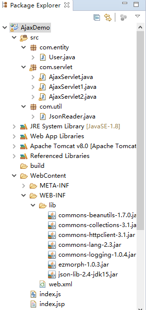
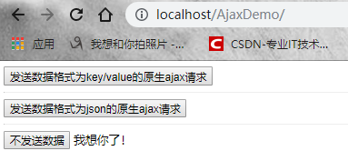
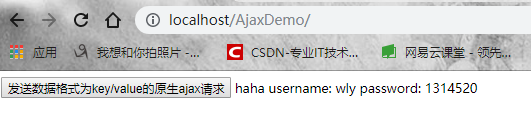

原文连接:https://www.cnblogs.com/1314520wly/p/iloveyou.html
萌新小白人生中的第一篇博客，难免会有差错，还望各位大佬多多包涵。
1. Ajax技术简介
Ajax(Asynchronous JavaScript and XML，异步JavaScript和XML)时一种创建交互式网页应用的网页开发技术，它并不是一项新的技术，其产生的目的是用于实现页面的局部刷新。通过Ajax技术可以使之前的应用程序在每次提交时不用进行页面的整体刷新，从而提升操作的性能。
2. Servlet概念
Servlet(服务器端小程序)是使用java编写的服务器端小程序，可以像JSP一样，生成动态的Web页。不过，Servlet侧重于逻辑控制，JSP侧重于视图展示。Servlet主要运行在服务器端，并由服务器调用执行，是一种按照Servlet标准开发的类。Servlet最大的好处就是可以处理客户传来的HTTP请求，并返回一个响应。
3. 同步和异步
同步：客户端发送请求给服务端，在等待服务端响应请求的这段时间，客户端不能做其他事情，只能等待。服务器端做完了才返回给客户端，这时客户端就可以做其他事情了。用户使用起来可能不太友好，但是有时我们必须拿到服务端的数据才能进行下一步操作。比如我给你打电话，你必须接通电话我才可以和你通话。
异步：客户端发送请求给服务端，在等待服务端响应请求的这段时间，客户端可以做其他事情，不用等待。节约了时间。提高了效率。比如发短信。一条短信发完后，不管你看没看，回复没回复，我可以再发下一条短信。不过，也有可能造成短信干扰。所以要慎重。当然，打电话和发短信的前提是必须有手机，手机必须有话费。（说一句废话）。
4. Servlet处理原生Ajax请求（不发送数据/发送key/value数据/发送json格式数据）
开发环境：eclipse+tomcat+jsp+javascript+ajax+servlet
4.1 Servlet处理原生Ajax请求（不携带数据，返回普通文本）
(1) 搭建环境：
在eclipse中新建Java web项目（会自动导入JRE System Library包），比如我把项目名字写为AjaxDemo，并将项目部署到tomcat服务器上，下面是eclipse中项目的目录结构：

我们先不管lib中的jar包，下面我会进行分析，一步一步来。下面我们进行开发。
（2）编写inedex.jsp页面
在WebContent根目录下新建index.jsp文件，文件内容如下：
1 <%@ page language="java" import="java.util.*" pageEncoding="UTF-8"%>
2
3 <%-- <%@ taglib uri="http://java.sun.com/jsp/jstl/core" prefix="c"%> --%>
4 <%
5 String path = request.getContextPath();
6 String basePath = request.getScheme() + "://" + request.getServerName() + ":" + request.getServerPort()
7 + path + "/";
8 %>
9 <!DOCTYPE html>
10 <html>
11 <head>
12 <base href="<%=basePath%>">
13 <title>I LOVE YOU</title>
14 <link rel="stylesheet" type="text/css" href="">
15 <script type="text/javascript" src="index.js"></script>
16
17 </head>
18 <body>
19
20 <button id="mybutton" value="异步请求服务器" onclick="fun1()" >发送数据格式为key/value的原生ajax请求</button>
21 <spand id="show" />
22
23 <br/>
24
25 <hr/>
26
27 <button id="mybutton1" value="异步请求服务器" onclick="fun2()" >发送数据格式为json的原生ajax请求</button>
28 <spand id="show1" />
29
30
31 <br/>
32 <hr/>
33
34 <button id="mybutton2" value="异步请求服务器" onclick="fun3()" >不发送数据</button>
35 <spand id="show2" />
36
37 </body>
这个页面我们编写了三个按钮，并且都注册了事件，可以调用js文件中对应的函数来响应按钮。这里我们看id="mybutton2"这个按钮（第三个），不发送数据这个按钮。<span>标签的作用主要是为了显示返回的内容。我们注意到这个jsp文件引用了javascript文件。下面我们编写js文件。
（3）编写inedex.js文件
1 /**
2 *
3 */
4 //原生ajax提交key/value数据
5 function fun1(){
6
7 var value="username=wly&password=1314520"; //key/value类型
8 var x=new XMLHttpRequest(); //创建ajax对象
9 x.onreadystatechange=function(){ //对ajax对象进行监听
10 if(x.readyState==4){ //4表示解析完毕
11 if(x.status==200){ //200为正常返回
12 var data=x.responseText; //返回的文本内容
13 document.getElementById("show").innerHTML=data;
14 console.log(data); //web控制台打印
15 }
16 }
17 }
18
19 //(1)发送方式
20 //（2）发送地址
21 //（3）是否异步，true为异步，false为同步
22 x.open("POST","AjaxServlet",true);
23 x.setRequestHeader("Content-type","application/x-www-form-urlencoded");
24 x.send(value); //发送
25 }
26
27
28 //原生ajax提交json数据
29 function fun2(){
30 var user={
31 "username":"wly",
32 "password":"1314521"
33 };
34 var x=new XMLHttpRequest(); //创建ajax对象
35 x.onreadystatechange=function(){ //对ajax对象进行监听
36 if(x.readyState==4){ //4表示解析完毕
37 if(x.status==200){ //200为正常返回
38 var data=JSON.parse(x.responseText); //把json字符串解析为javascript对象
39 document.getElementById("show1").innerHTML=data.message+" "+data.user.username+" "+data.user.password;
40 console.log(data);
41 console.log(data.meaasage);
42 console.log(data.user);
43 }
44 }
45 }
46
47 //(1)发送方式
48 //（2）发送地址
49 //（3）是否异步，true为异步，false为同步
50 x.open("POST","AjaxServlet1",true);
51 x.setRequestHeader("Content-type","application/x-www-form-urlencoded");
52
53 //把javascript对象转化为json字符串
54 x.send(JSON.stringify(user));
55 }
56
57
58 //原生ajax请求（不发送数据）
59 function fun3(){
60
61
62 var x=new XMLHttpRequest(); //创建ajax对象
63 x.onreadystatechange=function(){ //对ajax对象进行监听
64 if(x.readyState==4){ //4表示解析完毕
65 if(x.status==200){ //200为正常返回
66 var data=x.responseText; //返回的文本内容
67 document.getElementById("show2").innerHTML=data;//将内容显示在span标签中
68 console.log(data); //web控制台打印
69 }
70 }
71 }
72
73 //(1)发送方式
74 //（2）发送地址
75 //（3）是否异步，true为异步，false为同步
76 x.open("POST","AjaxServlet2",true);
77 //设置请求头信息
78 x.setRequestHeader("Content-type","application/x-www-form-urlencoded");
79 x.send(null); //发送 ,不发送数据,使用null
80 }
我们来看fun3()这个函数，这里我们使用原生ajax提交请求，这里我们不发送数据，所以send中的参数为null。代码里面都有注释，这里不做过多解释。
既然提交了请求，那么我们必须编写服务器端代码来处理ajax请求。接下来servlet就登场了。
（4）编写Servlet文件
1 package com.servlet;
2
3 import java.io.IOException;
4
5 import javax.servlet.ServletException;
6 import javax.servlet.http.HttpServlet;
7 import javax.servlet.http.HttpServletRequest;
8 import javax.servlet.http.HttpServletResponse;
9
10 public class AjaxServlet2 extends HttpServlet {
11
12 protected void doGet(HttpServletRequest request, HttpServletResponse response)
13 throws ServletException, IOException {
14
15 // 设置发送到客户端的响应的内容类型为html,编码方式为UTF-8
16 response.setContentType("text/html;charset=UTF-8");
17 // 返回内容
18 response.getWriter().write("我想你了！");// 返回一个普通字符串
19 }
20
21 protected void doPost(HttpServletRequest req, HttpServletResponse resp) throws ServletException, IOException {
22 this.doGet(req, resp);
23 }
24 }此时servlet处理Ajax请求非常简单，因为不需要接受数据，所以只返回普通文本就行了。注意response.getWriter()返回的是PrintWriter，这是一个打印输出流。调用其write方法输出文本内容。接下来我们再web.xml配置servlet。
（5）web.xml配置Servlet
为什么要在web.xml中配置Servlet呢？因为当我们在浏览器输入url地址时，发送请求给tomcat容器，tomcat必须要加载相对应servlet，并调用Servlet去处理请求，所以必须要在web.xml中配置servlet。如果不配置的话，就会找不到相应的Servlet来处理。
1 <?xml version="1.0" encoding="UTF-8"?>
2 <web-app xmlns:xsi="http://www.w3.org/2001/XMLSchema-instance" xmlns="http://java.sun.com/xml/ns/javaee" xsi:schemaLocation="http://java.sun.com/xml/ns/javaee http://java.sun.com/xml/ns/javaee/web-app_3_0.xsd" id="WebApp_ID" version="3.0">
3 <display-name>AjaxDemo</display-name>
4 <welcome-file-list>
5 <welcome-file>index.html</welcome-file>
6 <welcome-file>index.htm</welcome-file>
7 <welcome-file>index.jsp</welcome-file>
8 <welcome-file>default.html</welcome-file>
9 <welcome-file>default.htm</welcome-file>
10 <welcome-file>default.jsp</welcome-file>
11 </welcome-file-list>
12
13
14 <servlet>
15 <servlet-name>AjaxServlet</servlet-name>
16
17 <servlet-class>com.servlet.AjaxServlet</servlet-class>
18 </servlet>
19
20 <servlet>
21 <servlet-name>AjaxServlet1</servlet-name>
22
23 <servlet-class>com.servlet.AjaxServlet1</servlet-class>
24 </servlet>
25
26
27 <servlet>
28 <servlet-name>AjaxServlet2</servlet-name>
29
30 <servlet-class>com.servlet.AjaxServlet2</servlet-class>
31 </servlet>
32
33
34
35
36
37
38 <servlet-mapping>
39
40 <servlet-name>AjaxServlet</servlet-name>
41 <url-pattern>/AjaxServlet</url-pattern>
42
43 </servlet-mapping>
44
45
46 <servlet-mapping>
47
48 <servlet-name>AjaxServlet1</servlet-name>
49 <url-pattern>/AjaxServlet1</url-pattern>
50
51 </servlet-mapping>
52
53
54 <servlet-mapping>
55
56 <servlet-name>AjaxServlet2</servlet-name>
57 <url-pattern>/AjaxServlet2</url-pattern>
58
59 </servlet-mapping>
60
61 </web-app>
我们看到AjaxServlet2配置好了。说明一下。配置servlet有2个标签。第一个是<servlet></servlet>这里面我们配置的是servlet名称和全类路径。第二个
<servlet-mapping></servlet-mapping>配置的是servlet名称（和第一个标签的servlet名称保持一致）和映射路径。这里我使用斜杠/加上自己的路径。
我们注意到<welcome-file-list>标签配置有一个index.jsp文件，相当于是一个欢迎页面。到时我们写url请求地址时就不用写文件名字了。（方便）
下来我们跑一下程序。
（5）运行程序
启动tomcat，在谷歌浏览器地址栏上输入请求地址url：localhost/AjaxDemo/
好了，ok。点击按钮（不发送数据）运行就行了。效果展示图：

注意：一般请求地址为localhost：端口号/项目名/jsp文件名。localhost意为本地主机，就是这台计算机。tomcat的默认端口号为8080，我把tomcat的端口号改为了80，而80端口号是HTTP协议的默认端口号。所以我可以省略掉80端口号。其实在你输入网站的时候其实浏览器（非IE）已经帮你输入协议了。后面的jsp文件名我也省了，因为得益于上面标签<welcme-file-list>的配置。哈哈。方便了好多。同理。我们可以实现其他实例。
4.2 Servlet处理原生Ajax请求（发送key/value数据，返回普通文本）
（1）编写jsp文件
上面有index.jsp代码，看第一个按钮就行了。同理。
（2）编写js文件
上面有index文件，看第一个函数fun1()就行了。注释都有。注意key/value的格式为data="username=wly&password=1314520"。多个键值对可以用&来连接，然后再使用send(data)方法进行发送数据。
（3）编写Servlet文件
1 package com.servlet;
2
3 import java.io.IOException;
4
5 import javax.servlet.ServletException;
6 import javax.servlet.http.HttpServlet;
7 import javax.servlet.http.HttpServletRequest;
8 import javax.servlet.http.HttpServletResponse;
9
10 public class AjaxServlet extends HttpServlet {
11
12 protected void doGet(HttpServletRequest request, HttpServletResponse response)
13 throws ServletException, IOException {
14
15 response.setContentType("text/html;charset=UTF-8");
16 String username = request.getParameter("username"); //获取username的内容
17 String password = request.getParameter("password"); //获取password的内容
18 System.out.println(username + " " + password);
19 response.getWriter().write("haha " + "username: " + username + " password: " + password); //连接一个普通字符串返回
20
21 }
22
23 protected void doPost(HttpServletRequest req, HttpServletResponse resp) throws ServletException, IOException {
24 this.doGet(req, resp);
25 }
26 }此时servlet要做的事情，接受前台传来的数据和返回内容。获取前台传来的内容，使用request.getParameter(String paramString)方法。可以根据参数的名称获取相应的内容。这个方法非常重要。获取到了以后，我们只返回一个普通文本字符串即可。
（4）web.xml配置servlet
同理。上面web.xml已经配置好了。配置的是AjaxServlet。这里不做过多解释。
（5）运行程序
启动tomcat，在谷歌浏览器地址栏上输入请求地址url：localhost/AjaxDemo/
好了，ok。点击第一个按钮运行就行了。效果展示图：

4.3 Servlet处理原生Ajax请求（发送json数据，返回json数据）
（1）Json
JSON(JavaScript Object Notation, JS 对象简谱) 是一种轻量级的数据交换格式。对于Ajax应用程序来说，json比xml更快更易使用。人类易于阅读和书写。机器很容易解析和生成。它基于JavaScript编程语言（标准ECMA-262第三版-1999年12月）的子集。JSON是一种文本格式，它完全独立于语言。这些属性使JSON成为理想的数据交换语言。项目中常用的Json类库：Gson(谷歌公司研发)，FastJson(阿里巴巴研发)，Jackson（简单易用，依赖包少），Json-lib（使用广泛，依赖包较多）。
（2）导入jar包
因为涉及到json数据格式的处理，所以我们必须导入json相关的包以及依赖包进行处理。我们使用应用比较广泛的Json-lib类库。上面项目结构里面有7个jar包（lib下面）。可以发现上面json-lib库的核心jar包是json-lib-2.4-jdk15.jar，其他几个都是依赖包。Json-lib是一个Java类库，用于将bean，集合，java数组和XML转换为JSON，然后再次转换为bean和DynaBeans（动态bean）。
（3）新建实体类（User）
因为涉及到将json对象转化为java对象，将java对象转化为json对象。所以要建立User对象，有2个属性，username和password。并提供setter和getter方法，还有toString()方法。
package com.entity;
public class User {
private String username;
private String password;
public String getUsername() {
return username;
}
public void setUsername(String username) {
this.username = username;
}
public String getPassword() {
return password;
}
public void setPassword(String password) {
this.password = password;
}
@Override
public String toString() {
return "User [username=" + username + ", password=" + password + "]";
}
}
（4）编写jsp文件
同理。看第二个按钮即可。
（5）编写js文件
同理。上面index.js文件中的fun2()函数。这里做一下解释。注意json的数据格式var user={"username":"wly", "password":1314521}。这里我们把数据value值直接写了。（为了方便）。实际开发中我们应该获取页面的username的value值。password的value值。可以使用 document.getElementById("id").value来获取页面数据。还要注意有2个方法。观察fun2()。我们发现发送的时候，做了一下处理，使用的是JSON.stringify(user)。这个函数的作用主要是将javascript对象转化为json字符串，因为定义的user是一个var类型，它是一个javascript对象，只是内容定义的是符合json数解析为javascript对象据规范的格式。所以才可以转化。转化为json字符串才可以发送。在把参数传入send()方法里面进行发送。同理。还有一个方法JSON.parse(返回的json字符串)，它的作用是将返回的json字符解析为javascript对象，然后再进行前台页面数据的显示。
（6）编写servlet文件
第一步，先编写一个json的工具类，用来接受前台传来的json字符串，并把json字符串转化为json对象。
1 package com.util;
2
3 import java.io.BufferedReader;
4 import java.io.IOException;
5 import java.io.InputStreamReader;
6 import java.io.UnsupportedEncodingException;
7
8 import javax.servlet.http.HttpServletRequest;
9
10 import net.sf.json.JSONObject;
11
12 public class JsonReader {
13
14 public static JSONObject receivePost(HttpServletRequest request) throws UnsupportedEncodingException, IOException {
15
16 // 读取请求内容
17 BufferedReader br = new BufferedReader(new InputStreamReader(request.getInputStream(), "UTF-8"));
18
19 String line = null;
20 StringBuilder sb = new StringBuilder();
21
22 while ((line = br.readLine()) != null) {
23 sb.append(line);
24 }
25
26 // 将json字符串转化为json对象
27 JSONObject json = JSONObject.fromObject(sb.toString());
28 return json;
29 }
30
31 }第二步，编写servlet类。
1 package com.servlet;
2
3 import java.io.IOException;
4
5 import javax.servlet.ServletException;
6 import javax.servlet.http.HttpServlet;
7 import javax.servlet.http.HttpServletRequest;
8 import javax.servlet.http.HttpServletResponse;
9
10 import com.entity.User;
11 import com.util.JsonReader;
12
13 import net.sf.json.JSONObject;
14
15 public class AjaxServlet1 extends HttpServlet {
16
17 protected void doGet(HttpServletRequest request, HttpServletResponse response)
18 throws ServletException, IOException {
19
20 // response.setContentType("text/html;charset=UTF-8");
21
22 response.setContentType("application/json;charset=UTF-8"); //设置响应的内容类型和编码
23 JSONObject json = JsonReader.receivePost(request);
24 System.out.println(json);
25
26 // 将json对象转化为java对象
27 User user = (User) JSONObject.toBean(json, User.class);
28
29 JSONObject result = new JSONObject();
30
31 // 将user对象转化为json对象，保存user
32 result.put("user", JSONObject.fromObject(user));
33 result.put("message", "返回成功");
34 response.getWriter().print(result);
35 }
36
37 protected void doPost(HttpServletRequest req, HttpServletResponse resp) throws ServletException, IOException {
38 this.doGet(req, resp);
39 }
40 }
BufferedReader可以用来读取文件或者接收来自键盘（控制台）的信息。它比Scanner更加快捷，能够大幅度缩短程序运行时间。它下面的readline()方法可以一次性读取一行文字（String），非常方便。需要注意的是，使用BufferedReader对象的readLine()方法必须处理java.io.IOException异常(Exception)。以及，在使用完BufferredReader以后，需要用close()方法关闭流。上面我们用BufferedReader对象来接受请求内容。并使用StringBuilder对象进行存储StringBuilder是一个字符串变量，单线程下效率比较高。JSONObject类是json-lib核心库中的一个比较重要的类，这里我们使用其中的2个方法就行。其他的自己看源码。
一个是public static JSONObject fromObject(Object object)，这是JSONObject类的一个静态方法，将Object类型数据（或者是java对象）转化为JSONObject对象返回。另一个是public static Object toBean(JSONObject jsonObject, Class beanClass)方法，它的作用主要用于将json对象转化为Object类型（或者说java对象）。注意上面PrintWritter的print（）方法，其实底层还是调用了write方法。其实最终返回的还是json字符串。自己感兴趣的话可以自己研究一下源码。
（7）web.xml配置servlet
同理。上面已经配置。配置的是AjaxServlet1。
（8）运行程序
同理。输入url地址。点击第二个按钮就行了。效果图如下：

5. 总结
（1）注意jsp文件引入js文件的路径问题，这里我们可以把2个文件都放在WebContent根目录下。
（2）注意ajax提交的地址找不到时，要检查web.xml是否配置正确，也可以使用${pageContext.request.contextPath}/配置的映射地址。相当于是全路径。
（3）Ajax传给后台json数据时，需要使用JSON.stringify(data)将javascript对象转化为json字符串。与之相对应的方法是JSON.parse(data)。
（4）Ajax使用JSONObject类处理json数据时，注意json-lib的jar包以及依赖包一定要导全。
（5）json-lib类库性能分析：json-lib最开始的也是应用最广泛的json解析工具，json-lib 不好的地方确实是依赖于很多第三方包，对于复杂类型的转换，json-lib对于json转换成bean还有缺陷， 比如一个类里面会出现另一个类的list或者map集合，json-lib从json到bean的转换就会出现问题。json-lib在功能和性能上面都不能满足现在互联网化的需求。
本篇博客源码链接：https://pan.baidu.com/s/1fTR0mpfmj9-D7tPrONOu8g 提取码：swsa